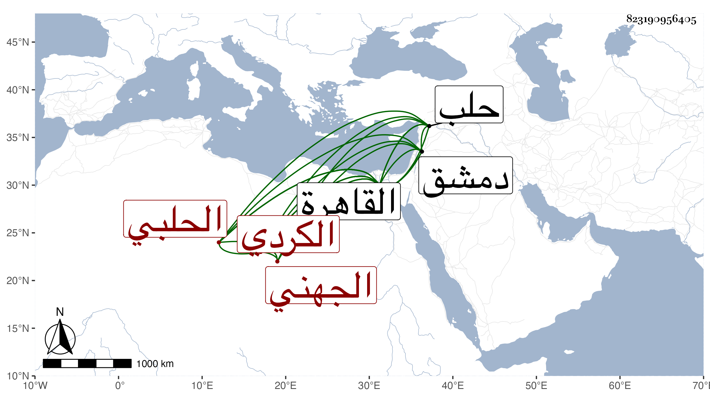

0902Sakhawi.DawLamic.ITO20230111-ara1.EIS1600.823190956405
Biography ID: 823190956405
226
محمد بن ناهض بن محمد بن حسن بن أبي الحسن الشمس الجهني الكردي الأصل الحلبي نزيل القاهرة ولد تقريبا بحلب في سنة سبع وخمسين وسبعمائة وتولع بالأدب فأبلغ نظما ونثرا وسكن القاهرة مدة وتنزل في صوفية الجمالية ومدح أعيانها بل عمل سيرة المؤيد شيخ فأجاد ما شاء وقرضها له خلق في سنة تسع عشرة ومن نظمه : يا رب إني ضعيف وفيك أحسنت ظني فلا تخيب رجائي وعافني واعف عني وقد ذكره ابن فهد في معجمه وبيض له وكذا جرده البقاعي ، وهو في عقود المقريزي وقال أنه سكن القاهرة زمانا ومدح الأعيان وتعيش ببيع الفقاع بدمشق ثم ترك وأقام مدة يستجدي بمدحه الناس حتى مات بالقاهرة في حادي عشر شعبان سنة إحدى وأربعين وكان عنده فوائد وكتبت عنه من نظمه :
| كم دولة بفنون الظلم قد فنيت | وراح آثارهم في عكسهم ومحوا |
| وجاء من بعدهم من يفرحون بها | وقال سبحانه حتى إذا فرحوا |
وكذا كتب عنه عن الولوي عبد الله بن أبي البقاء القاضي شعرا .
